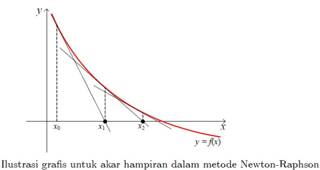
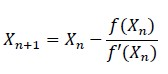
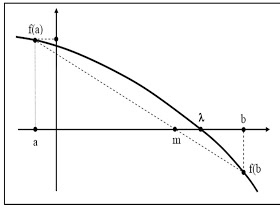
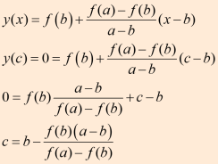
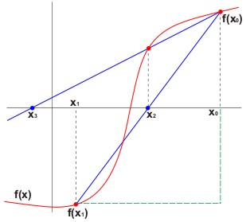

Mencari Akar dari Fungsi Transendental¶
Solusi persamaan 𝑓(𝑥)=0 terdapat di bidang sains, engineering dan aplikasi lainnya. Jika 𝑓(𝑥) adalah sebuah polynomial dengan dua pangkat atau lebih, kita punya formula untuk menyelesaikannya. Tetapi, jika 𝑓(𝑥) adalah fungsi transcendental (fungsi yang tidak bisa diekspresikan dengan fungsi aljabar, contoh: fungsi trigonometri, exponensial, atau inversi dari keduanya), kita belum memiliki formula untuk mendapatkan solusi. Saat berhadapan dengan persamaan ini, kita memiliki metoda seperti Bisection, Newton-Raphson, Secant dan metoda “salah-posisi” (biasa juga disebut sebagai metoda regula falsi). Metoda-metoda tersebut menyelesaikan persamaan transcendental dengan menggunakan teori persamaan, yaitu: jika 𝑓(𝑥) kontinu di interval (a,b) dan jika f(a) dan f(b) berlawanan tanda, maka 𝑓(𝑥)=0 setidaknya akan memiliki satu akar real antara a dan b.
1. Metode Bisection¶
Misalkan kita punya persamaan 𝑓(𝑥)=0 dimana akarnya berada di antara (a,b), dan 𝑓(𝑥) adalah persamaan kontinu dan bisa berupa persamaan aljabar atau transcendental. Jika f(a) dan f(b) berlawanan tanda, maka 𝑓(𝑥)=0 setidaknya akan memiliki satu akar real antara a dan b. Anggap 𝑓(𝑎) positif dan 𝑓(𝑏) negatif, yang mengimplikasikan bahwa setidaknya satu akar berada antara a dan b. Kita asumsikan bahwa akarnya adalah 𝑥0=(𝑎+𝑏)/2. Cek tanda 𝑓(𝑥0). Jika 𝑓(𝑥0) negatif, akarnya berada di antara a dan 𝑥0. Jika 𝑓(𝑥0) positif, maka akarnya berada di antara 𝑥0 dan b. Sehingga, hasilnya adalah salah satu diantara ini: 𝑥1=𝑎+𝑥02 , atau 𝑥1=𝑥0+𝑏2 Jika 𝑓(𝑥1) negatif, akarnya berada di antara 𝑥0 dan 𝑥1, sehingga 𝑥2=(𝑥0+𝑥1)/2. Dan seterusnya, jika 𝑓(𝑥2) negatif, maka akarnya berada di antara 𝑥0 dan 𝑥2, dan 𝑥3=(𝑥0+𝑥2)/2 dan seterusnya. Ulangi proses 𝑥0,𝑥1,𝑥2,….sampai limit konvergensinya adalah akar dari persamaan tersebut.

Langkah: 1. Cari a dan b dimana 𝑓(𝑎) dan 𝑓(𝑏) berlawanan tanda dengan metoda trial dan error 2. Asumsikan akar awal sebagai 𝑥0=(𝑎+𝑏)/2 3. Jika 𝑓(𝑥0) negatif, maka akarnya berada di antara a dan 𝑥0, dan buat akar berikutnya sebagai 𝑥1=𝑎+𝑥02 4. Jika 𝑓(𝑥0) positif, maka akarnya berada di antara 𝑥0 dan b, dan buat akar berikutnya sebagai 𝑥1=𝑥0+𝑏2 5. Jika 𝑓(𝑥1) negatif, akarnya berada di antara 𝑥0 dan 𝑥1, dan buat akar berikutnya sebagai 𝑥2=(𝑥0+𝑥1)/2 6. Jika 𝑓(𝑥2) negatif, maka akarnya berada di antara 𝑥0 dan 𝑥2, dan buat akar berikutnya sebagai 𝑥3=(𝑥0+𝑥2)/2 7. Ulangi proses tersebut hingga dua angka berurutannya sama dan angka tersebut adalah akarnya
Contoh Program :
def bisection(f,a,b,N): '''Approximate solution of f(x)=0 on interval [a,b] by bisection method. Parameters ---------- f : function The function for which we are trying to approximate a solution f(x)=0. a,b : numbers The interval in which to search for a solution. The function returns None if f(a)*f(b) >= 0 since a solution is not guaranteed. N : (positive) integer The number of iterations to implement. Returns ------- x_N : number The midpoint of the Nth interval computed by the bisection method. The initial interval [a_0,b_0] is given by [a,b]. If f(m_n) == 0 for some midpoint m_n = (a_n + b_n)/2, then the function returns this solution. If all signs of values f(a_n), f(b_n) and f(m_n) are the same at any iteration, the bisection method fails and return None. Examples -------- >>> f = lambda x: x**2 - x - 1 >>> bisection(f,1,2,25) 1.618033990263939 >>> f = lambda x: (2*x - 1)*(x - 3) >>> bisection(f,0,1,10) 0.5 ''' if f(a)*f(b) >= 0: print("Bisection method fails.") return None a_n = a b_n = b for n in range(1,N+1): m_n = (a_n + b_n)/2 f_m_n = f(m_n) if f(a_n)*f_m_n < 0: a_n = a_n b_n = m_n print ("a = ",a_n) print ("b = ",b_n) elif f(b_n)*f_m_n < 0: a_n = m_n b_n = b_n print ("a = ",a_n) print ("b = ",b_n) elif f_m_n == 0: print("Found exact solution.") return m_n else: print("Bisection method fails.") return None return (a_n + b_n)/2 f = lambda x: x**2 - 5*x +6 approx_phi = bisection(f,1,2.5,25) print("x = ",approx_phi) ##error_bound = 2**(-26) ##print(error_bound) ##print(abs( (1 + 5**0.5)/2 - approx_phi) < error_bound)
2. Metode Newtoon - Raphson¶
Misalkan kita punya persamaan 𝑓(𝑥)=0 dimana akarnya berada antara (a,b), dan 𝑓(𝑥) adalah persamaan kontinu dan bisa berupa persamaan aljabar atau transcendental. Jika f(a) dan f(b) berlawanan tanda, maka 𝑓(𝑥)=0 setidaknya akan memiliki satu akar real antara a dan b. Anggap 𝑓(𝑎) positif dan 𝑓(𝑏) negatif, yang mengimplikasikan bahwa setidaknya satu akar berada antara a dan b. Kita asumsikan bahwa akarnya adalah a atau b, yang mana diantara 𝑓(𝑎) atau 𝑓(𝑏) yang nilainya lebih dekat ke nol. Angka tersebut diasumsikan sebagai akar pertama. Kemudian kita iterasi proses tersebut dengan menggunakan persamaan berikut sampai perhitungannya konvergen.


Langkah:
- Cari a dan b dimana 𝑓(𝑎) dan 𝑓(𝑏) berlawanan tanda dengan metoda trial dan error
- Asumsikan akar awal adalah 𝑋0=𝑎, jika nilai 𝑓(𝑎) mendekati nol atau 𝑋0=𝑏 jika nilai 𝑓(𝑏) mendekati nol
- Cari 𝑋1 dengan menggunakan persamaan 𝑋1=𝑋0−𝑓(𝑋0)𝑓′(𝑋0)
- Cari 𝑋2 dengan menggunakan persamaan 𝑋2=𝑋1−𝑓(𝑋1)𝑓′(𝑋1)
- Cari 𝑋3,𝑋4,…𝑋𝑛 sampai nilai yang dihasilkan sama.
Contoh Program :
def newton(f,Df,x0,epsilon,max_iter): '''Approximate solution of f(x)=0 by Newton's method. Parameters ---------- f : function Function for which we are searching for a solution f(x)=0. Df : function Derivative of f(x). x0 : number Initial guess for a solution f(x)=0. epsilon : number Stopping criteria is abs(f(x)) < epsilon. max_iter : integer Maximum number of iterations of Newton's method. Returns ------- xn : number Implement Newton's method: compute the linear approximation of f(x) at xn and find x intercept by the formula x = xn - f(xn)/Df(xn) Continue until abs(f(xn)) < epsilon and return xn. If Df(xn) == 0, return None. If the number of iterations exceeds max_iter, then return None. Examples -------- >>> f = lambda x: x**2 - x - 1 >>> Df = lambda x: 2*x - 1 >>> newton(f,Df,1,1e-8,10) Found solution after 5 iterations. 1.618033988749989 ''' xn = x0 for n in range(0,max_iter): fxn = f(xn) if abs(fxn) < epsilon: print('Found solution after',n,'iterations.') return xn Dfxn = Df(xn) if Dfxn == 0: print('Zero derivative. No solution found.') return None xn = xn - fxn/Dfxn print('Exceeded maximum iterations. No solution found.') return None p = lambda x: x**3 - x**2 - 1 Dp = lambda x: 3*x**2 - 2*x approx = newton(p,Dp,1,1e-10,10) print(approx) ##f = lambda x: x**(1/3) ##Df = lambda x: (1/3)*x**(-2/3) ##approx = newton(f,Df,0.1,1e-2,100)
3. Metode Regula - Falsi¶
Metode Regula Falsi adalah salah satu metode numerik yang digunakan untuk mencari akar dari suatu persamaan dengan memanfaatkan kemiringan dan selisih tinggi dari dari dua titik batas range. Sebenarnya metode ini hampir sama dengan Metode Biseksi, tapi titik pendekatan yang digunakan pada metode ini berbeda dengan Metode Biseksi. Rumus titik pendekatan tersebut adalah :
 
Keterangan :
a = X0 b = X1 m = X2
Metode regula falsi merupakan salah satu metode tertutup untuk menentukan solusi akar dari persamaan non linier. Berikut langkah penyelesaiannya :
1) Tentukan interval [X0, X1] yang memuat akar
2) Tentukan titik X2 dengan menarik garis lurus dari titik [X0, f(X0)] ke titik [X1, f(X1)] titik X2 adalah titik potong garis dengan sumbu X.
X2 = X0 * f(X1) - X1 * f(X0) / f(X1) - f(X0)
X2 = X1 - [ (X1 -X0) / f(X1) - f(X0) ] * f(X1) [P] X2 = X1 - P * f(X1)
3) Suatu kondisi bila :
f(X0) * f(X2) < 0 Maka akar pada [X0, X2] , X2 = X1
f(X0) * f(X2) = 0 akar = X2
f(X0) * f(X2) > 0 Maka akar pada [X2, X1], X2 = X0
4) Pengulangan / iterasi mencari X2 dan interval baru dilakukan berdasarkan nilai toleransi | (X2 - X)1 / X1 | atau | (X2 - X0) / X0 |
5) Kelemahan : Hanya salah satu ujung titik interval ( X0 atau X1 ) yang bergerak menuju akar dan yang lain selalu tetap untuk setiap iterasi [ nilai bersifat mutlak ]
Contoh Program :
error = 0.01 a = 0 b = 2.1 def f(x): return x**2 - 5*x + 6 def regulasi_falsi(a,b): i=0 max_iter = 50 iteration = True while iteration and i < max_iter: if f(a)*f(b) < 0: x = (a*abs(f(b)) + b*abs(f(a))) / (abs(f(a)) + abs(f(b))) if f(a)*f(x) < 0: b = x print(x) if f(x)*f(b) < 0: a = x print(x) if abs(a-b) < error: iteration = False else: i+=1 else: print('tidak di temukan akar') print('x =', x) regulasi_falsi(a,b)
4. Metode Secant¶
Metode secant merupakan perbaikan dari metode regula-falsi dan newton raphson dimana kemiringan dua titik dinyatakan sacara diskrit, dengan mengambil bentuk garis lurus yang melalui satu titik. Tujuan metode secant adalah untuk menyelesaikan masalah yang terdapat pada metode Newton-Raphson yang terkadang sulit mendapatkan turunan pertama yaitu f‘ (x). Fungsi metode secant adalah untuk menaksirkan akar dengan menggunakan diferensi daripada turunan untuk memperkirakan kemiringan/slope.

f’ (x) = ( f (xn) – f (xn-1)) / *(xn – xn-1)* xn+1 = xn – ( (f(xn) (xn – xn-1)) / ( f(xn) -f(xn-1)* )
Algoritma Metode Secant :
- Definisikan fungsi f(x)
- Definisikan torelansi error (e) dan iterasi maksimum (n)
- Masukkan dua nilai pendekatan awal yang di antaranya terdapat akar yaitu x0 dan x1,sebaiknya gunakan metode tabel atau grafis untuk menjamin titik pendakatannya adalah titik pendekatan yang konvergensinya pada akar persamaan yang diharapkan.
- Hitung f(x0) dan f(x1) sebagai y0 dan y1
- Untuk iterasi I = 1 s/d n atau |f(xn)| Xn+1 = Xn – Yn (Xn – Xn-1 / Yn – Yn-1)
- Akar persamaan adalah nilai x yang terakhir.
Contoh Program :
def secant(f,a,b,N): '''Approximate solution of f(x)=0 on interval [a,b] by the secant method. Parameters ---------- f : function The function for which we are trying to approximate a solution f(x)=0. a,b : numbers The interval in which to search for a solution. The function returns None if f(a)*f(b) >= 0 since a solution is not guaranteed. N : (positive) integer The number of iterations to implement. Returns ------- m_N : number The x intercept of the secant line on the the Nth interval m_n = a_n - f(a_n)*(b_n - a_n)/(f(b_n) - f(a_n)) The initial interval [a_0,b_0] is given by [a,b]. If f(m_n) == 0 for some intercept m_n then the function returns this solution. If all signs of values f(a_n), f(b_n) and f(m_n) are the same at any iterations, the secant method fails and return None. Examples -------- >>> f = lambda x: x**2 - x - 1 >>> secant(f,1,2,5) 1.6180257510729614 ''' if f(a)*f(b) >= 0: print("Secant method fails.") return None a_n = a b_n = b for n in range(1,N+1): m_n = a_n - f(a_n)*(b_n - a_n)/(f(b_n) - f(a_n)) f_m_n = f(m_n) if f(a_n)*f_m_n < 0: a_n = a_n b_n = m_n elif f(b_n)*f_m_n < 0: a_n = m_n b_n = b_n elif f_m_n == 0: print("Found exact solution.") return m_n else: print("Secant method fails.") return None return a_n - f(a_n)*(b_n - a_n)/(f(b_n) - f(a_n)) p = lambda x: x**2 - 5*x + 6 print(p(1)) print(p(2)) approx = secant(p,1,2.5,25) print(approx)